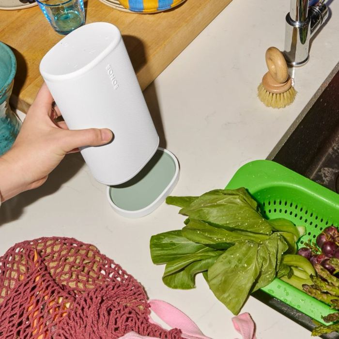

1
Sonos Play
8 146 kr för två, med nätadaptrar
Står på laddbasen hemma och behåller stereoparet. Kopplas ihop via Bluetooth även utan wifi.
Uteffekt uppges inte · 24 h batteri · IP67
App: Sonos-appen krävs för wifi och stereopar.
Obs: Nätadapter på 45 W köps till.